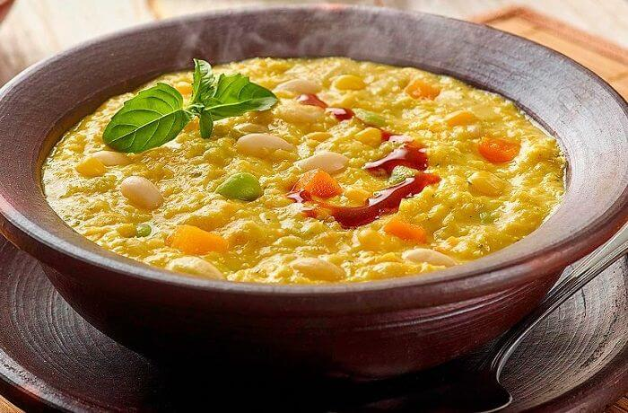

Receta de Porotos con Mazamorra
¡Disfruta de esta deliciosa receta tradicional!
Ingredientes:
- Porotos
- Maíz morado
- Azúcar
- Canela
- Vainilla
Pasos:
- Lava y remoja los porotos durante la noche.
- Cocina los porotos hasta que estén tiernos.
- Prepara una mazamorra con maíz morado, azúcar, canela y vainilla.
- Sirve los porotos con la mazamorra caliente.
